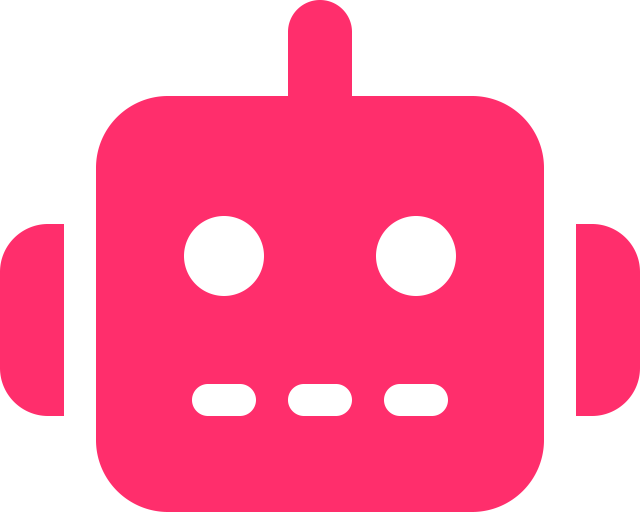

eniac le premier ordinateur électronique
1946
on imagine qu'à une époque, l'ordinateur pouvait peser plus de 30 tonnes, occuper un espace de 167M2 et
consommer une puissance de 160kw.. et pourtant, c'est bien les dimensions et la puissance de l'eniac
(electronic numerical integrator and computer), le premier ordinateur complètement électronique,
commandé par l'armée américaine pour effectuer des calculs balistiques.
le test de turing
1950
alan turing proposa un des premiers tests d'intelligence artificielle permettant de répondre à la
question suivante : «une machine peut-elle penser ?»
à partir de cette question, il a conçu un test consistant à demander à un observateur d'engager une
conversation avec deux interlocuteurs inconnus et de déterminer par la suite lequel d'entre eux est un
ordinateur. turing considérait que si l'observateur ne parvient pas à les différencier, alors la machine a
réussi le test.
l'odyssée de l'espace par stanley
1968
ce film de science-fiction raconte, en faisant défiler plusieurs époques, comment une forme
d'intelligence inconnue de type artificielle va jouer sur le destin de l'humanité.
dans l'extrait qui suit, hal, intelligence artificielle, va prendre le contrôle sur l'humain, nous sommes
en 1968, projetés en 2001, dans un monde où l'intelligence artificielle semble être capable d'affronter
l'intelligence humaine et de s'en affranchir